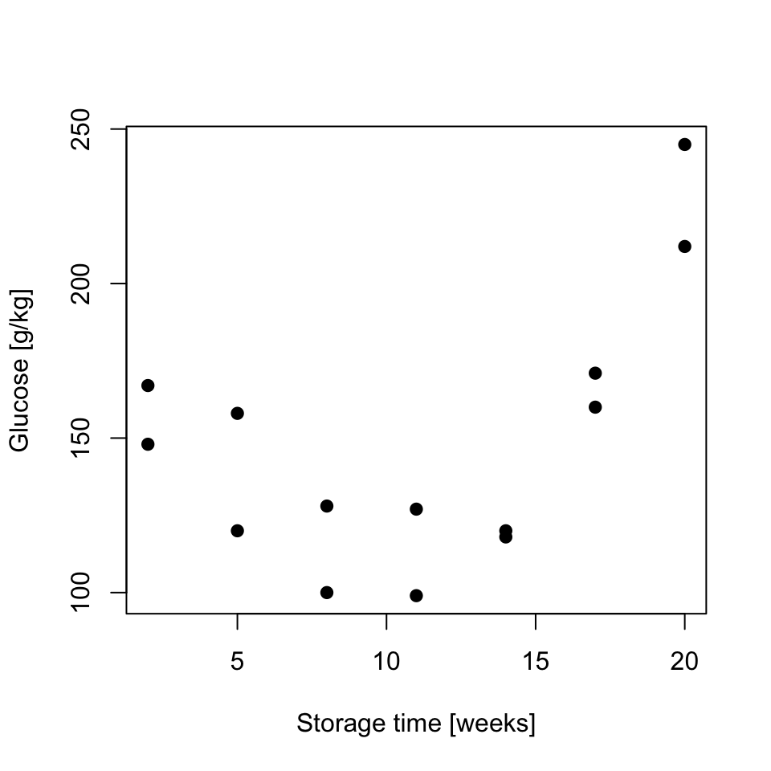

Exercises (introduction to linear models)
Data for exercises are on Canvas under Files -> data_exercises –> linear-models
Exercise 1 (Protein levels in pregnancy) The researchers were interested whether protein levels in expectant mothers are changing throughout the pregnancy. Observations have been taken on 19 healthy women and each woman was at different stage of pregnancy (gestation).
Assuming linear model:
- \(Y_i = \alpha + \beta x_i + \epsilon_i\), where \(Y_i\) corresponds to protein levels in i-th observation
and taking summary statistics:
- \(\sum_{i=1}^{n}x_i = 456\)
- \(\sum_{i=1}^{n}x_i^2 = 12164\)
- \(\sum_{i=1}^{n}x_iy_i = 369.87\)
- \(\sum_{i=1}^{n}y_i = 14.25\)
- \(\sum_{i=1}^{n}y_i^2 = 11.55\)
- find the least square estimates of \(\hat{\alpha}\) and \(\hat{\beta}\)
- knowing that e.s.e(\(\hat{\beta}) = 0.003295\)
can we:
- reject the null hypothesis that the is no relationship between protein level and gestation, i.e. perform a hypothesis test to test \(H_0:\beta = 0\);
- can we reject the null hypothesis that \(\beta = 0.02\), i.e. perform a hypothesis test to test \(H_0:\beta = 0.02\)
- write down the linear model in the vector-matrix notation and identify response, parameter, design and error matrices
- read in “protein.csv” data into R, set Y as protein (response) and calculate using matrix functions the least squares estimates of model coefficients
- use
lm()function in R to check your calculations - use the fitted model in R to predict the value of protein levels at week 20. Try plotting the data, fitted linear model and the predicted value to assess whether your prediction is to be expected.
Exercise 2 (Glucose levels in potatoes) The glucose level in potatoes depends on their storage time and the relationship is somehow curvilinear as shown below. As we believe that the quadratic function might describe the relationship, assume linear model in form \(Y_i = \alpha + \beta x_i + \gamma x_i^2 + \epsilon_i \quad i=1,\dots,n\) where \(n=14\) and
- write down the model in vector-matrix notation
- load data from “potatoes.csv” and use least squares estimates to obtain estimates of model coefficients
- use
lm()function to verify your calculations - perform a hypothesis test to test \(H_0:\gamma=0\); and comment whether there is a significant quadratic relationship
- predict glucose concentration at storage time 4 and 16 weeks. Plot the data, the fitted model and the predicted values
Code
data.potatoes <- read.csv("data/lm/potatoes.csv")
plot(data.potatoes$Weeks, data.potatoes$Glucose, pch=19, xlab="Storage time [weeks]", ylab="Glucose [g/kg]")
Exercise 3 (Linear models form) Which of the following models are linear models and why?
- \(Y_i=\alpha + \beta x_i + \epsilon_i\)
- \(Y_i=\beta_0 + \beta_1 x_{i,1} + \beta_2 x_{i,2} + \epsilon_i\)
- \(Y_i=\alpha + \beta x_i + \gamma x_i^2 + \epsilon_i\)
- \(Y_i=\alpha + \gamma x_i^\beta + \epsilon_i\)
Answers to selected exercises
Solution. Exercise 1
- \(S_{xx} = \sum_{i=1}^{n}x_i^2-\frac{(\sum_{i=1}^{n}x_i)^2}{n} = 12164 - \frac{456^2}{19} = 1220\)
- \(S_{xy} = \sum_{i=1}^nx_iy_i-\frac{\sum_{i=1}^{n}x_i\sum_{i=1}^{n}y_i}{n} = 369.87 - \frac{(456 \cdot 14.25)}{19} = 27.87\)
- \(\hat{\beta} = \frac{S_{xy}}{S_{xx}} = 27.87 / 1220 = 0.02284\)
- \(\hat{\alpha} = \bar{y}-\frac{S_{xy}}{S_{xx}}\cdot \bar{x} = \frac{14.25}{19}-\frac{27.87}{1220}\cdot \frac{456}{19} = 0.20174\)
We can calculate test statistics following:
- \(\frac{\hat{\beta} - \beta}{e.s.e(\hat{\beta})} \sim t(n-p) = \frac{0.02284 - 0}{0.003295} = 6.934\) where the value follows Student’s t distribution with \(n-p = 19 - 2 = 17\) degrees of freedom. We can now estimate the a p-value using Student’s t distribution table or use R function
2*pt(6.934, df=17, lower=F)[1] 2.414315e-06As p-value << 0.001 there is sufficient evidence to reject \(H_0\) in favor of \(H_1\), thus we can conclude that there is a significant relationship between protein levels and gestation
Similarly, we can test \(H_0:\beta = 0.02\), i.e. \(\frac{\hat{\beta} - \beta}{e.s.e(\hat{\beta})} \sim t(n-p) = \frac{0.02284 - 0.02}{0.20174} = 0.01407753\). Now the test statistics is small
2*pt(0.01407753, df=17, lower=F)[1] 0.988932p-value is large and hence there is no sufficient evidence to reject \(H_0\) and we can conclude that \(\beta = 0.02\)
- We can rewrite the linear model in vector-matrix formation as \(\mathbf{Y}= \mathbf{\beta}\mathbf{X} + \mathbf{\epsilon}\) where:
response \(\mathbf{Y}=\begin{bmatrix} y_1 \\ y_2 \\ \vdots \\ y_{19} \end{bmatrix}\)
parameters \(\boldsymbol\beta=\begin{bmatrix} \alpha \\ \beta \end{bmatrix}\)
design matrix \(\mathbf{X}=\begin{bmatrix} 1 & x_1 \\ 1 & x_2 \\ \vdots & \vdots \\ 1 & x_{19} \end{bmatrix}\)
errors \(\boldsymbol\epsilon=\begin{bmatrix} \epsilon_1 \\ \epsilon_2 \\ \vdots \\ \epsilon_{19} \end{bmatrix}\)
- The least squares estimates in vector-matrix notation is \(\hat{\boldsymbol\beta}= (\mathbf{X}^T\mathbf{X})^{-1}\mathbf{X}^T\mathbf{Y}\) and we can calculate this in R
# read in data
data.protein <- read.csv("data/lm/protein.csv")
# print out top observations
head(data.protein) Protein Gestation
1 0.38 11
2 0.58 12
3 0.51 13
4 0.38 15
5 0.58 17
6 0.67 18# define Y and X matrices given the data
n <- nrow(data.protein) # nu. of observations
Y <- as.matrix(data.protein$Protein, ncol=1) # response
X <- as.matrix(cbind(rep(1, length=n), data.protein$Gestation)) # design matrix
head(X) # double check that the design matrix looks like it should [,1] [,2]
[1,] 1 11
[2,] 1 12
[3,] 1 13
[4,] 1 15
[5,] 1 17
[6,] 1 18# least squares estimate
beta.hat <- solve(t(X)%*%X)%*%t(X)%*%Y # beta.hat is a matrix that contains our alpha and beta in the model
print(beta.hat) [,1]
[1,] 0.20173770
[2,] 0.02284426- We use
lm()function to check our calculations
# fit linear regression model and print model summary
protein <- data.protein$Protein # our Y
gestation <- data.protein$Gestation # our X
model <- lm(protein ~ gestation)
print(summary(model))
Call:
lm(formula = protein ~ gestation)
Residuals:
Min 1Q Median 3Q Max
-0.16853 -0.08720 -0.01009 0.08578 0.20422
Coefficients:
Estimate Std. Error t value Pr(>|t|)
(Intercept) 0.201738 0.083363 2.420 0.027 *
gestation 0.022844 0.003295 6.934 2.42e-06 ***
---
Signif. codes: 0 '***' 0.001 '**' 0.01 '*' 0.05 '.' 0.1 ' ' 1
Residual standard error: 0.1151 on 17 degrees of freedom
Multiple R-squared: 0.7388, Adjusted R-squared: 0.7234
F-statistic: 48.08 on 1 and 17 DF, p-value: 2.416e-06new.obs <- data.frame(gestation = 20)
y.pred <- predict(model, newdata = new.obs)
# we can visualize the data, fitted linear model (red), and the predicted value (blue)
plot(gestation, protein, pch=19, xlab="gestation [weeks]", ylab="protein levels [mgml-1]")
lines(gestation, model$fitted.values, col="red")
points(new.obs, y.pred, col="blue", pch=19, cex = 1)
Solution. Exercise 2
- We can rewrite the linear model in vector-matrix formation as \[\mathbf{Y} = \mathbf{X}\boldsymbol\beta + \boldsymbol\epsilon\]
where: response \(\mathbf{Y}=\begin{bmatrix} y_1 \\ y_2 \\ \vdots \\ y_{14} \end{bmatrix}\)
parameters \(\boldsymbol\beta=\begin{bmatrix} \alpha \\ \beta \\ \gamma \end{bmatrix}\)
design matrix \(\mathbf{X}=\begin{bmatrix} 1 & x_1 & x_1^2\\ 1 & x_2 & x_2^2\\ \vdots & \vdots & \vdots \\ 1 & x_{14} & x_{14}^2 \end{bmatrix}\)
errors \(\boldsymbol\epsilon=\begin{bmatrix} \epsilon_1 \\ \epsilon_2 \\ \vdots \\ \epsilon_{14} \end{bmatrix}\)
- load data to from “potatoes.csv” and use least squares estimates for obtain estimates of model coefficients
data.potatoes <- read.csv("data/lm/potatoes.csv")
# define matrices
n <- nrow(data.potatoes)
Y <- data.potatoes$Glucose
X1 <- data.potatoes$Weeks
X2 <- (data.potatoes$Weeks)^2
X <- cbind(rep(1, length(n)), X1, X2)
X <- as.matrix(X)
# least squares estimate
# beta here refers to the matrix of model coefficients incl. alpha, beta and gamma
beta.hat <- solve(t(X)%*%X)%*%t(X)%*%Y
print(beta.hat) [,1]
200.169312
X1 -19.443122
X2 1.030423- we use
lm()function to verify our calculations:
model <- lm(Y ~ X1 + X2)
print(summary(model))
Call:
lm(formula = Y ~ X1 + X2)
Residuals:
Min 1Q Median 3Q Max
-17.405 -11.250 -8.071 12.911 29.286
Coefficients:
Estimate Std. Error t value Pr(>|t|)
(Intercept) 200.1693 15.0527 13.298 4.02e-08 ***
X1 -19.4431 3.1780 -6.118 7.54e-05 ***
X2 1.0304 0.1406 7.329 1.49e-05 ***
---
Signif. codes: 0 '***' 0.001 '**' 0.01 '*' 0.05 '.' 0.1 ' ' 1
Residual standard error: 16.4 on 11 degrees of freedom
Multiple R-squared: 0.8694, Adjusted R-squared: 0.8457
F-statistic: 36.61 on 2 and 11 DF, p-value: 1.373e-05- perform a hypothesis test to test \(H_0:\gamma=0\); and comment whether we there is a significant quadratic term
- \(\frac{\hat{\gamma} - \gamma}{e.s.e(\hat{\gamma})} \sim t(n-p) = \frac{1.030423 - 0}{0.1406} = 7.328755\) where the value follows Student’s t distribution with \(n-p = 19 - 2 = 17\) degrees of freedom. We can now estimate the a p-value using Student’s t distribution table or use a function in R
2*pt(7.328755, df=14-3, lower=F)[1] 1.487682e-05As p-value << 0.001 there is sufficient evidence to reject \(H_0\) in favor of \(H_1\), thus we can conclude that there is a significant quadratic relationship between glucose and storage time
- predict glucose concentration at storage time 4 and 16 weeks
new.obs <- data.frame(X1 = c(4, 16), X2 = c(4^2, 16^2))
pred.y <- predict(model, newdata = new.obs)
plot(data.potatoes$Weeks, data.potatoes$Glucose, xlab="Storage time [weeks]", ylab="Glucose [g/kg]", pch=19)
lines(data.potatoes$Weeks, model$fitted.values, col="red")
points(new.obs[,1], pred.y, pch=19, col="blue")